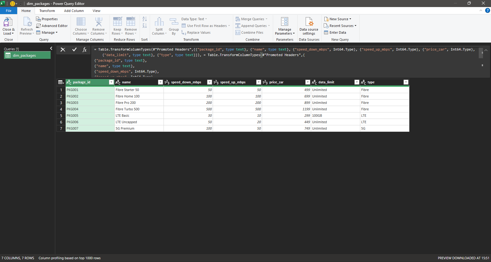
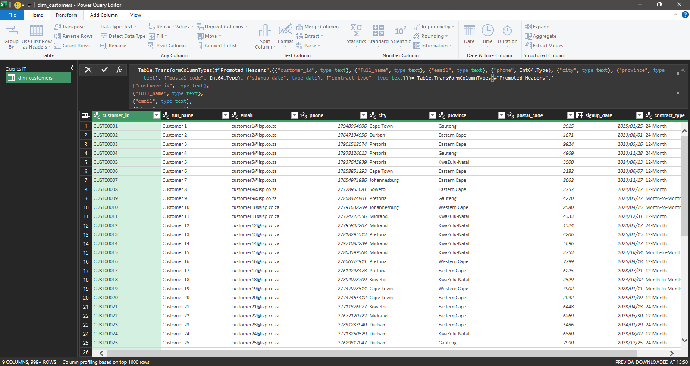
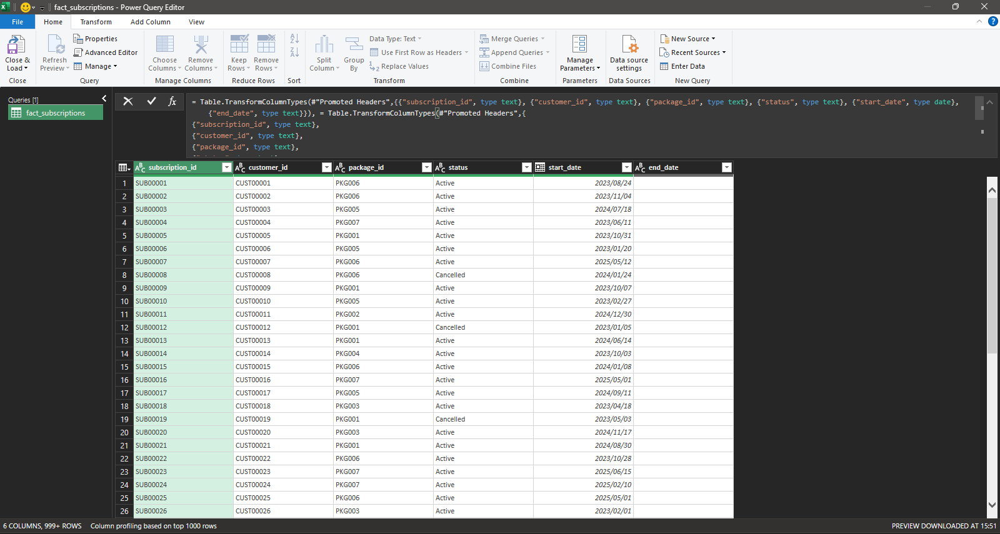
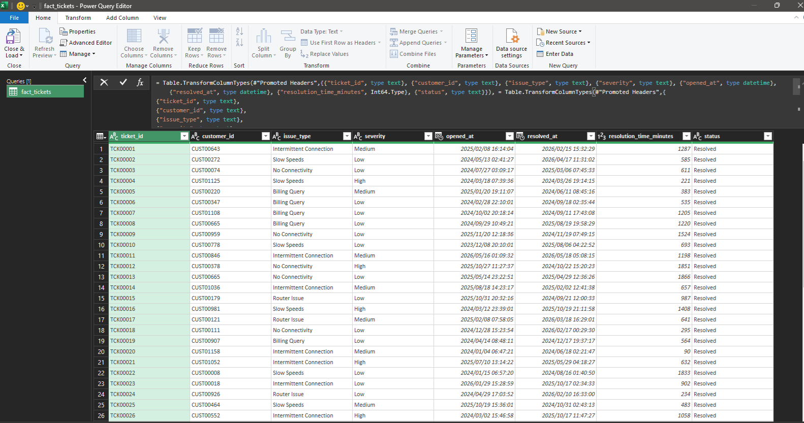

Power Query: Data Type Standardisation




I used Power Query as the data transformation stage of this project. It allowed me to take raw CSV exports from the SQL database and prepare them for analysis in Excel. This included structuring data ensuring consistency and making sure all tables were ready for reporting.
I also used Power Query to apply transformations that standardise column types and ensure data quality across all datasets. This made it easier to work with the data in Excel without manual cleaning. It represents an important step in making the dataset reliable for analysis.
Power Query acts as the bridge between raw database output and analytical reporting. It ensures that all data used in Excel is structured consistent and ready for insight generation.



